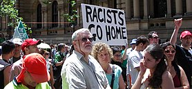

El antirracismo es una forma de acción para estar en contra el racismo, el racismo sistémico y la opresión hacia a los grupos marginados.Ser alguien antirracista se basa en esfuerzos y acciones conscientes para brindar oportunidades equitativas para todas las personas a nivel individual y sistémico.Las personas pueden actuar en contra de esos problemas reconociendo los privilegios personales, enfrentando a actos de discriminación racial y trabajando para cambiar a los prejuicios raciales personales.
